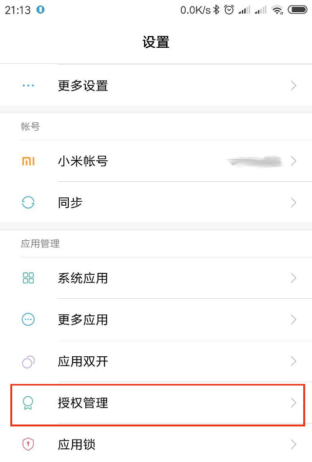
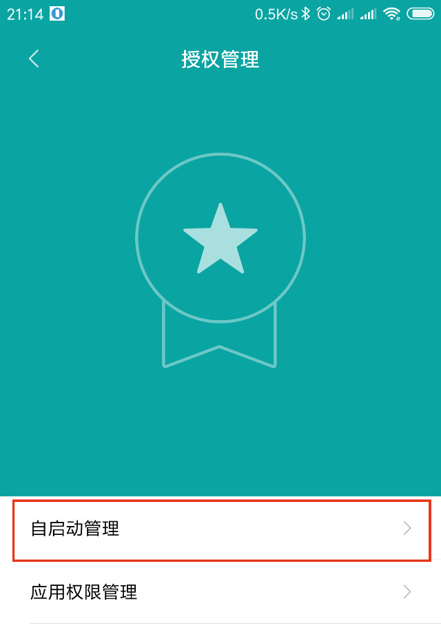
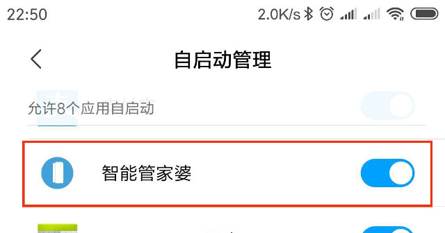
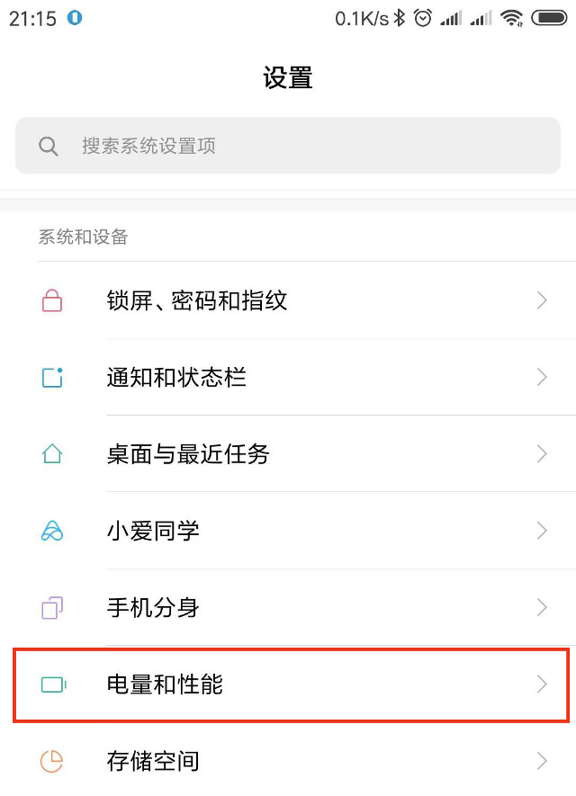
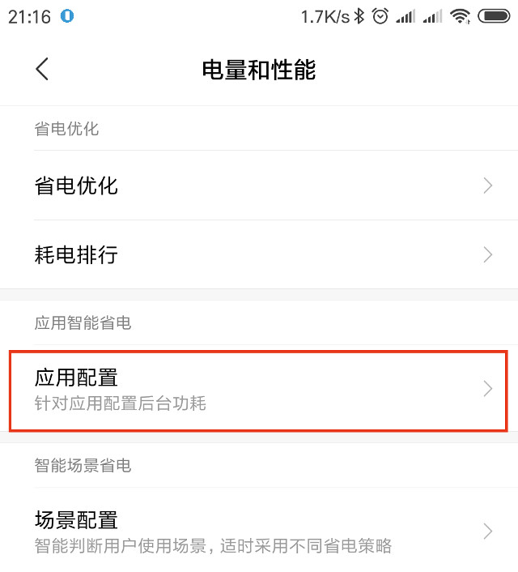
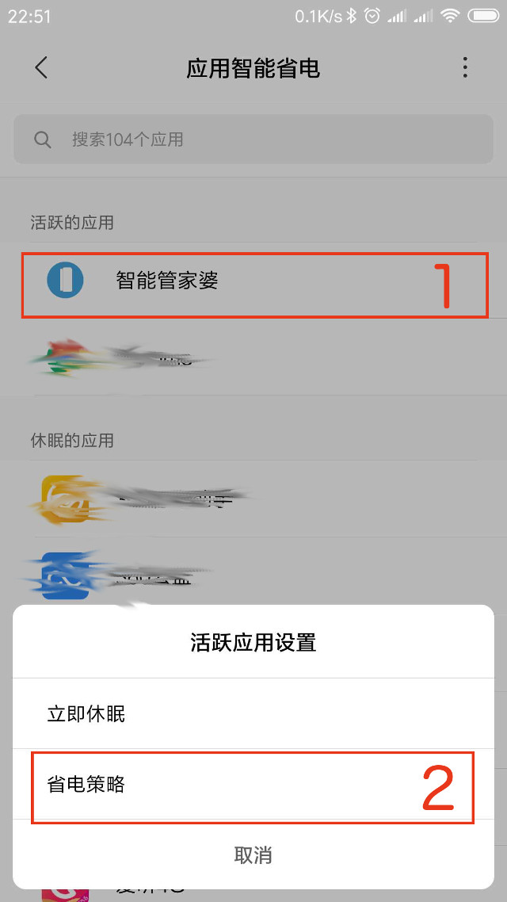
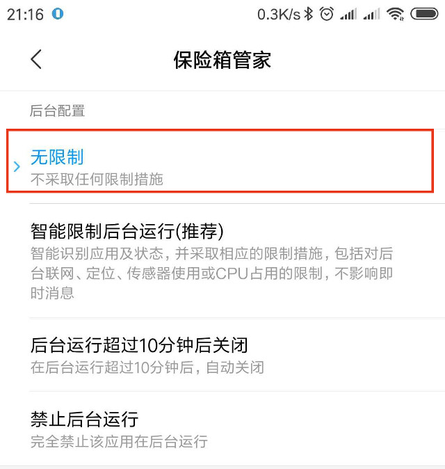
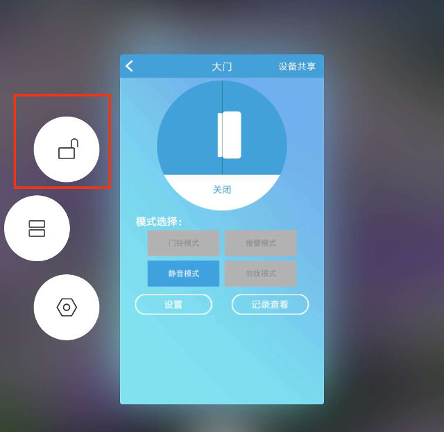

智能管家婆是配合智能保险箱使用的app。小米系统默认不允许第三方自启动。如果希望本app能及时的收到保险箱的报警信息，需要app能够具有自动启动，开机启动，常驻后台。必须进行以下设置：
1.打开"设置"功能,找到"授权管理"并点击

2.找到“自启动管理“选项并点击

3.找到“智能管家婆”并打开自启动开关

4.返回“设置”首页,找到“电量和性能"选项并点击

5.找到"应用配置"选项并点击

6.第一步找到“智能管家婆”并点击，第二步在弹出菜单中点击"省电策略"

7.选择"无限制"

8.启动“智能管家婆”app, 然后点击屏幕底部“多任务“菜单，然后长按”智能管家婆“在弹出的菜单中点击”加锁“
